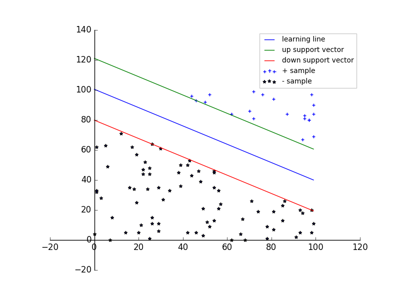
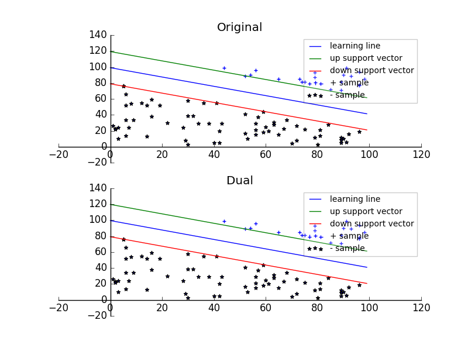
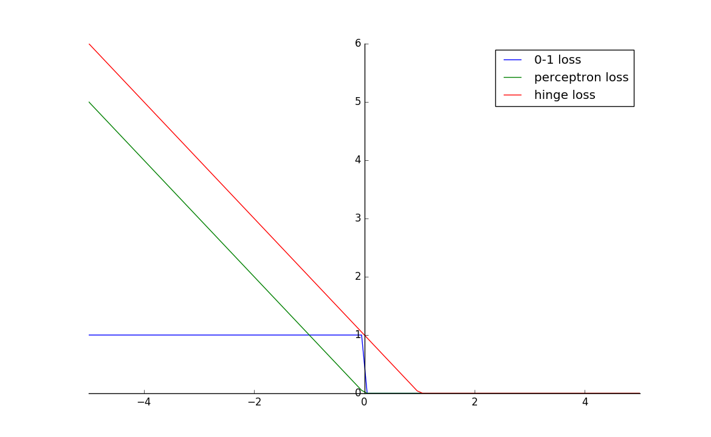
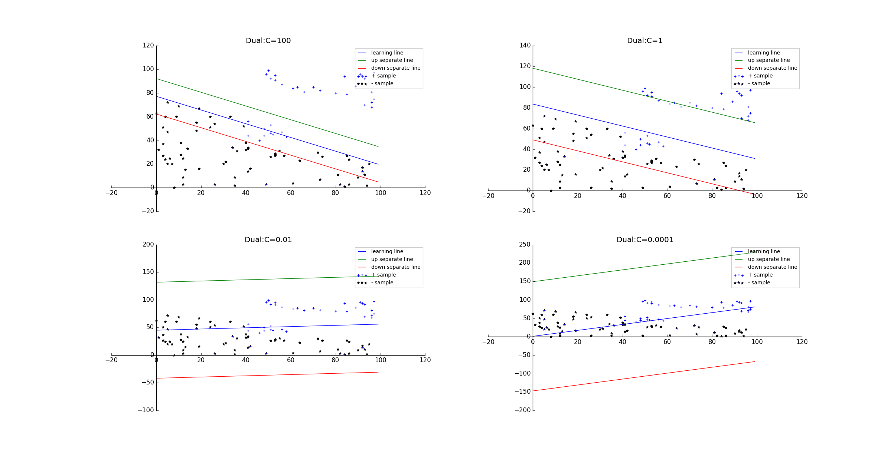
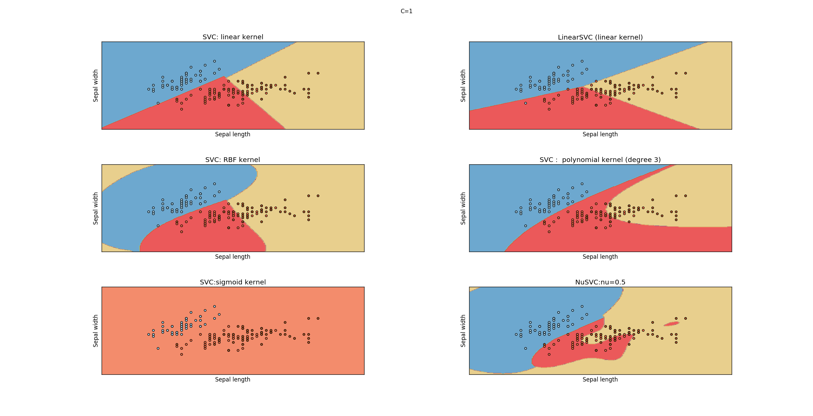
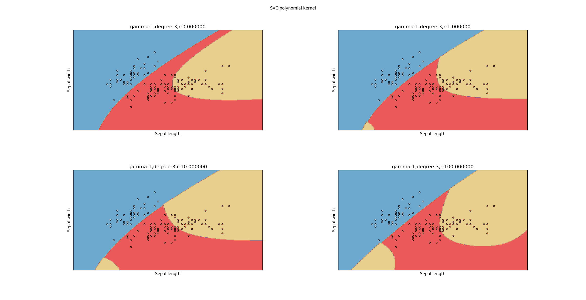
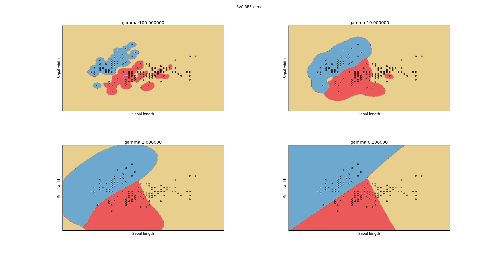

1.支持向量机(support vector machines，SVM）是一种二类分类模型。它的基本模型是定义在特征空间上的间隔最大的线性分类器
如果数据集是线性可分的，那么感知机获得的模型可能有很多个。而支持向量机选择的是间隔最大的那一个
2.支持向量机支持各种复杂的情况：
3.当输入空间为欧氏空间或离散集合、特征空间为希尔伯特空间时，核函数表示将输入从输入空间映射到特征空间得到的特征向量之间的内积。使用核函数可以学习非线性支持向量机，等价于隐式的在高维的特征空间中学习线性支持向量机。这种方法称作核技巧。
欧式空间 \(\subseteq\) 希尔伯特空间 \(\subseteq\) 内积空间 \(\subseteq \) 赋范空间
越抽象的空间具有的性质越少，在这样的空间中能得到的结论就越少。不过反过来，如果发现了赋范空间中的某些性质，那么前面那些空间也都具有这个性质。
我们生活在三维空间，把它拓展到n维空间就是欧式空间，这是我们比较熟悉的空间，具有一切美好的性质。当我们不局限于有限维度，就来到了希尔伯特空间。从有限到无限是一个质变，很多美好的性质消失了，一些非常有悖常识的现象会出现。如果再进一步去掉完备性，就来到了内积空间。如果再进一步去掉"角度"的概念，就来到了赋范空间。在这里，起码我们还有“长度”和“距离”的概念。
1.假设输入空间与特征空间为两个不同的空间。
则有：
所有输入都由输入空间转换到特征空间，支持向量机的学习是在特征空间进行的。
2.假设给定一个特征空间上的训练数据集 \(T=\{(\mathbf x_1,y_1),(\mathbf x_2,y_2),\cdots,(\mathbf x_N,y_N)\}\)，其中 \(\mathbf x_i \in \mathcal X = \mathbb R^{n},y_i \in \mathcal Y=\{+1,-1\},i=1,2,\cdots,N\)。 \(\mathbf x_i\) 为第 i 个特征向量，也称作实例； \(y_i\) 为 \(\mathbf x_i\) 的类标记； 当 \(y_i=+1\) 时，称 \(\mathbf x_i\) 为正例；当 \(y_i=-1\) 时，称 \(\mathbf x_i\) 为负例。 \((\mathbf x_i,y_i)\) 称作样本点。
假设训练数据集是线性可分的。则学习的目标是在特征空间中找到一个分离超平面，能将实例分到不同的类。分离超平面对应于方程 \(\mathbf w \cdot \mathbf x+b=0\)， 它由法向量 \(\mathbf w\) 和截距 b 决定，可以用 \((\mathbf w,b)\) 来表示。
一般地，当训练数据集线性可分时，存在无穷个分离超平面可以将两类数据正确分开。感知机利用误分类最小的策略，求出分离超平面。但是此时的解有无穷多个。线性可分支持向量机利用间隔最大化求得最优分离超平面，这样的解只有唯一的一个。
3.线性可分支持向量机：给定线性可分训练数据集，通过间隔最大化或者等价地求解相应的凸二次规划问题学习得到的分离超平面为：\(\mathbf w^{*}\cdot \mathbf x+b^{*}=0\)。 相应的分类决策函数：\(f(\mathbf x)=\text{sign}(\mathbf w^{*}\cdot \mathbf x+b^{*})\) 称为线性可分支持向量机
4.通常可以将一个点距离分离超平面的远近来表示分类预测的确信程度。
在超平面 \(\mathbf w \cdot \mathbf x+b=0\) 确定的情况下:
- \(\mathbf w \cdot \mathbf x_i+b \gt 0\) 时，即 \(\mathbf x_i\) 位于超平面上方，将 \(\mathbf x_i\) 划分为正类，此时 \(y_i=+1\)
- \(\mathbf w \cdot \mathbf x_i+b \lt 0\) 时，即 \(\mathbf x_i\) 位于超平面下方，将 \(\mathbf x_i\) 划分为负类，此时 \(y_i=-1\)
所以可以用 \(y(\mathbf w \cdot \mathbf x+b)\) 来表示分类的正确性以及确信度（符号决定了正确性，范数决定了确信度）。这就是函数间隔的概念。
5.函数间隔：对于给定的训练数据集 T 和超平面 \((\mathbf w,b)\)，定义超平面 \((\mathbf w,b)\) 关于样本点 \((\mathbf x_i,y_i)\) 的函数间隔为： \(\hat\gamma_i=y_i(\mathbf w\cdot \mathbf x_i+b)\)
定义超平面 \((\mathbf w,b)\) 关于训练集 T 的函数间隔为超平面 \((\mathbf w,b)\) 关于T中所有样本点 \((\mathbf x_i,y_i)\) 的函数间隔之最小值： \(\hat\gamma=\min \hat\gamma_i\)
\(\hat\gamma_i\) 是关于样本点的间隔， \(\hat\gamma\) 是关于训练集的间隔
6.对于函数间隔，只需要成比例的改变 \(\mathbf w\) 和 \(b\) ，比如将它们改变为 \(100\mathbf w\)和 \(100b\)，超平面 \(100\mathbf w\cdot \mathbf x+100b=0\) 还是原来的超平面，但是函数间隔却成为原来的100倍。
因此我们需要对分离超平面施加某些约束，如规范化，令 \(||\mathbf w||=1\)，使得函数间隔是确定的。此时的函数间隔成为几何间隔。
7.几何间隔：对于给定的训练数据集 T 和超平面 \((\mathbf w,b)\)，定义超平面 \((\mathbf w,b)\) 关于样本点 \((\mathbf x_i,y_i)\) 的几何间隔为： \(\gamma_i=y_i(\frac{\mathbf w}{||\mathbf w||}\cdot \mathbf x_i+\frac{b}{||\mathbf w||})\)
定义超平面 \((\mathbf w,b)\) 关于训练集 T 的几何间隔为超平面 \((\mathbf w,b)\) 关于T中所有样本点 \((\mathbf x_i,y_i)\) 的几何间隔之最小值： \(\gamma=\min \gamma_i\)
\(\gamma_i\) 是关于样本点的间隔， \(\gamma\) 是关于训练集的间隔
由定义可知函数间隔和几何间隔有下列的关系： \(\gamma_i=\frac{\hat\gamma_i}{||\mathbf w||}\) , \(\gamma=\frac{\hat\gamma}{||\mathbf w||}\)
8.支持向量机学习基本思想：求解能够正确划分训练数据集并且几何间隔最大的分离超平面。
对于线性可分的训练数据集而言，线性可分分离超平面有无穷多个（等价于感知机），但几何间隔最大的分离超平面是唯一的。这里的间隔最大化又称作硬间隔最大化。
间隔最大化的直观解释为：不仅将正负实例点分开，而且对于最难分辨的实例点（距离超平面最近的那些点）也有足够大的确信度来讲它们分开。
9.求解几何间隔最大的分离超平面可以表示为约束的最优化问题： $$ \max_{\mathbf w,b} \gamma\\ s.t. \quad y_i(\frac{\mathbf w}{||\mathbf w||}\cdot \mathbf x_i+\frac{b}{||\mathbf w||}) \ge \gamma, i=1,2,\cdots,N $$
考虑几何间隔和函数间隔的关系，改写问题为： $$ \max_{\mathbf w,b} \frac{\hat\gamma}{||\mathbf w||}\\ s.t. \quad y_i(\mathbf w \cdot \mathbf x_i+b) \ge \hat\gamma, i=1,2,\cdots,N $$
函数间隔 \(\hat \gamma\) 并不影响最优化问题的解。假设将 \(\mathbf w,b\) 按比例的改变为 \(\lambda \mathbf w,\lambda b\)，此时函数间隔变成 \(\lambda \hat\gamma\)。这一变化对求解最优化问题的不等式约束没有任何影响，对最优化目标函数也没有影响。因此令 \(\hat\gamma =1\)。同时注意到 \(\max \frac{1}{||\mathbf w||}\)和 \(\min \frac 12 ||\mathbf w||^{2}\) 是等价的，于是最优化问题改写为： $$ \min_{\mathbf w,b} \frac 12 ||\mathbf w||^{2}\\ s.t. \quad y_i(\mathbf w \cdot \mathbf x_i+b) -1 \ge 0, i=1,2,\cdots,N $$ 这是一个凸二次规划问题。
10.凸优化问题：指约束最优化问题： $$ \min_{\mathbf w}f(\mathbf w)\\ s.t. \quad g_i(\mathbf w) \le0,i=1,2,\cdots,k\\ h_i(\mathbf w)=0,i=1,2,\cdots,l $$
其中：
\(h(\mathbf x)\) 称为仿射函数，如果它满足 \(h(\mathbf x)=\mathbf a\cdot\mathbf x+b,\quad \mathbf a\in \mathbb R^{n},b \in \mathbb R, x \in \mathbb R^{n}\)
当目标函数 \(f(\mathbf w)\) 是二次函数且约束函数 \(g_i(\mathbf w)\) 是仿射函数时，上述凸最优化问题成为凸二次规划问题。
11.线性可分支持向量机学习算法——–最大间隔法的算法：
12.可以证明：若训练数据集 T 线性可分，则可将训练数据集中的样本点完全正确分开的最大间隔分离超平面存在且唯一。
13.在训练数据集线性可分的情况下，训练数据集的样本点中与分离超平面距离最近的样本点的实例称为支持向量。支持向量是使得约束条件等号成立的点，即 \(y_i(\mathbf w \cdot \mathbf x_i+b) -1=0\)
超平面 \(H_1\) 、 \(H_2\) 和分离超平面 \(\mathbf w \cdot\mathbf x+b=0\) 平行，且没有任何实例点落在\(H_1\) 、 \(H_2\) 之间。
14.在决定分离超平面时，只有支持向量起作用，其他的实例点并不起作用。
由于支持向量在确定分离超平面中起着决定性作用。所以将这种分离模型称为支持向量机。
支持向量的个数一般很少，所以支持向量机由很少的”重要的“训练样本确定。
15.示例
import numpy as np
import matplotlib.pyplot as plt
from scipy.optimize import minimize
def training_data(num):
'''
生成随机的训练数据。X 为二维，其中第一维特征为 [0,100] 之间的随机整数；
第二维特征为 [0,40] 之间的随机整数。
:param num: 训练数据集大小
:return: 训练数据集（一个 num*3 大小的数组，每一行为一个样本，
最后一列为分类（1为正类，-1为负类））。划分直线为 4*x_1+5*x_2=250
'''
x_1=np.random.randint(low=0,high=100,size=(num,1))
x_2=np.random.randint(low=0,high=100,size=(num,1))
valid_x_1=[]
valid_x_2=[]
y=[]
for i in range(num):
if 3*x_1[i]+5*x_2[i]<=400:
valid_x_1.append(x_1[i])
valid_x_2.append(x_2[i])
y.append(-1)
elif 3*x_1[i]+5*x_2[i]>=600:
valid_x_1.append(x_1[i])
valid_x_2.append(x_2[i])
y.append(1)
return np.c_[valid_x_1,valid_x_2,y]
##### 最优化问题
def func(x):# x=(w,b) 目标函数
w=x[:-1]
return np.dot(w,w) #
def jac(x): # 梯度函数
g=2*np.copy(x)
g[-1]=0
return g
def constrant(x,y_i,x_i): # 约束
w=x[:-1]
b=x[-1]
return y_i*(np.dot(w,x_i)+b)-1
###### 生成数据 #############
data_num=150 # 数据点个数
data=training_data(data_num)
constrants=[]
for i in range(len(data)):
constrants.append({'type':'ineq','fun':constrant,'args':(data[i][-1],data[i][:-1])})
result=minimize(func, np.array([1,1,1]), args=(), method='SLSQP', jac=jac,
constraints=constrants) #最优化问题
################### 绘图 ##################
figure=plt.figure()
ax=figure.add_subplot(111)
########## 绘制样本集的散点图 ############
ax.scatter(data[:,0] [data[:,2]==1],data[:,1] [data[:,2]==1],
label=r'+ sample',marker='+')
ax.scatter(data[:,0] [data[:,2]==-1],data[:,1] [data[:,2]==-1],label=r'- sample',
marker='*')
########## 绘制学习到的分类超平面
line_x=np.arange(0,100)
w=result.x[:-1]
b=result.x[-1]
line_y=-b/w[1]-line_x*w[0]/w[1]
line_y_down=-(1+b)/w[1]-line_x*w[0]/w[1]
line_y_up=(1-b)/w[1]-line_x*w[0]/w[1]
ax.plot(line_x,line_y,label=r'learning line')
ax.plot(line_x,line_y_up,label=r'up support vector') # 绘制上向量
ax.plot(line_x,line_y_down,label=r'down support vector')# 绘制下向量
################## 设置 ############
#### 平移坐标轴
ax.spines['left'].set_position(('data',0))
ax.spines['right'].set_color('none')
ax.xaxis.set_ticks_position('bottom')
ax.spines['bottom'].set_position(('data',0))
ax.spines['top'].set_color('none')
ax.yaxis.set_ticks_position('left')
ax.legend(loc='upper right',fontsize=10,framealpha=0.2)
figure.savefig("F:/linear_svm.png")

16.为求解线性可分支持向量机的最优化问题，可以将它作为原始最优化问题，应用拉格朗日对偶性。通过求解对偶问题得到原始问题的最优解。这就是线性可分支持向量机的对偶算法。优点：
原始问题： $$ \min_{\mathbf w,b} \frac 12 ||\mathbf w||^{2}\\ s.t. \quad y_i(\mathbf w \cdot \mathbf x_i+b) -1 \ge 0, i=1,2,\cdots,N $$
定义拉格朗日函数： $$L(\mathbf w,b,\alpha)=\frac 12 ||\mathbf w||^{2}-\sum_{i=1}^{N}\alpha_iy_i(\mathbf w \cdot \mathbf x_i +b)+\sum_{i=1}^{N} \alpha_i$$ 其中 \(\alpha=(\alpha_1,\alpha_2,\cdots,\alpha_N)\) 为拉格朗日乘子向量。
根据拉格朗日对偶性，原始问题的对偶问题是极大极小问题： \(\max_\alpha\min_{\mathbf w,b}L(\mathbf w,b,\alpha)\)
求极大值： $$ L(\mathbf w,b,\alpha)=\frac 12 \sum_{i=1}^{N}\sum_{j=1}^{N}\alpha_i\alpha_jy_iy_j(\mathbf x_i \cdot \mathbf x_j)-\sum_{i=1}^{N}\alpha_iy_i[(\sum_{j=1}^{N}\alpha_jy_j\mathbf x_j)\cdot \mathbf x_i+b]+\sum_{i=1}^{N} \alpha_i\\ =-\frac 12 \sum_{i=1}^{N}\sum_{j=1}^{N}\alpha_i\alpha_jy_iy_j(\mathbf x_i \cdot \mathbf x_j) +\sum_{i=1}^{N} \alpha_i $$
对偶问题极大值为： $$ \max_{\alpha}-\frac 12 \sum_{i=1}^{N}\sum_{j=1}^{N}\alpha_i\alpha_jy_iy_j(\mathbf x_i \cdot \mathbf x_j) +\sum_{i=1}^{N} \alpha_i\\ s.t. \quad \sum_{i=1}^{N}\alpha_iy_i=0\\ \alpha_i \ge 0,i=1,2,\cdots,N $$
设对偶最优化问题的 \(\alpha\) 的解为 \(\alpha^{*}=(\alpha_1^{*},\alpha_2^{*},\cdots,\alpha_N^{*})\)，则 $$\mathbf w^{*}=\sum_{i=1}^{N}\alpha_i^{*}y_i\mathbf x_i\\$$ 由于 \(\alpha^{*}\) 不是零向量（若它为零向量，则 \(\mathbf w^{*}\) 也为零向量，矛盾）。则存在某个 j 使得 \(\alpha_j^{*} \gt 0\)。此时必有 \(y_j(\mathbf w^{*} \cdot \mathbf x_j+b^{*})-1=0\)，同时考虑到 \(y_j^{2}=1\),得到 $$b^{*}=y_j-\sum_{i=1}^{N}\alpha_i^{*}y_i(\mathbf x_i \cdot \mathbf x_j)$$
于是分离超平面写作： $$\sum_{i=1}^{N}\alpha_i^{*}y_i(\mathbf x \cdot \mathbf x_i)+b^{*}=0$$ 分类决策函数写作： $$f(\mathbf x)=\text{sign}(\sum_{i=1}^{N}\alpha_i^{*}y_i(\mathbf x \cdot \mathbf x_i)+b^{*})$$
可以看到：分类决策函数只依赖于输入 \(\mathbf x\) 和训练样本输入的内积。上式称作线性可分支持向量机的对偶形式。
17.线性可分支持向量机学习算法：
\(\mathbf w^{*},b^{*} \) 只依赖于 \(\alpha_i^{*} \gt 0\) 对应的样本点 \(\mathbf x_i,y_i\)，而其他的样本点对于 \(\mathbf w^{*},b^{*} \) 没有影响。
我们将训练数据集里面对应于 \(\alpha_i^{*} \gt 0\) 的样本点对应的实例 \(\mathbf x_i\) 称为支持向量。
18.对于\(\alpha_i^{*} \gt 0\) 的样本点，根据 \(\alpha_i^{*}(y_i(\mathbf w^{*}\cdot \mathbf x_i+b^{*})-1)=0\)（拉普拉斯函数极小值条件） ，有： \(\mathbf w^{*}\cdot \mathbf x_i+b^{*}=\pm 1\)，即 \(\mathbf x_i\) 一定在间隔边界上。这与原始问题给出的支持向量的定义一致。
19.线性可分支持向量机原始算法和对偶算法的比较：
import numpy as np
import matplotlib.pyplot as plt
from scipy.optimize import minimize
def training_data(num):
'''
生成随机的训练数据。X 为二维，其中第一维特征为 [0,100] 之间的随机整数；第二维特征为 [0,40] \
之间的随机整数。
:param num: 训练数据集大小
:return: 训练数据集（一个 num*3 大小的数组，每一行为一个样本，最后一列为分类\
（1为正类，-1为负类））。划分直线为 4*x_1+5*x_2=250
'''
x_1=np.random.randint(low=0,high=100,size=(num,1))
x_2=np.random.randint(low=0,high=100,size=(num,1))
valid_x_1=[]
valid_x_2=[]
y=[]
for i in range(num):
if 3*x_1[i]+5*x_2[i]<=400:
valid_x_1.append(x_1[i])
valid_x_2.append(x_2[i])
y.append(-1)
elif 3*x_1[i]+5*x_2[i]>=600:
valid_x_1.append(x_1[i])
valid_x_2.append(x_2[i])
y.append(1)
return np.c_[valid_x_1,valid_x_2,y]
##### 原始问题最优化问题
def func(x):# x=(w,b) 目标函数
w=x[:-1]
return np.dot(w,w) #
def jac(x): # 梯度函数
g=2*np.copy(x)
g[-1]=0
return g
def constrant(x,y_i,x_i): # 约束
w=x[:-1]
b=x[-1]
return y_i*(np.dot(w,x_i)+b)-1
########对偶问题最优化问题
def func_dual(a,x,y):
sum=0
sum_a=0
for i in range(a.size):
sum_a+=a[i]
for j in range(a.size):
sum+=a[i]*a[j]*y[i]*y[j]*np.vdot(x[i],x[j])
return sum/2-sum_a
def jac_dual(a,x,y):
result=np.zeros_like(a)
for i in range(a.size):
for j in range(a.size):
result[i]+=a[j]*y[i]*y[j]*np.vdot(x[i],x[j])
result[i]-=1
return result
def constrant_dual_eq(a,y):
return np.vdot(a,y)
def constrant_dual_neq(a,i):
return a[i]
###### 生成数据 #############
data_num=150 # 数据点个数
data=training_data(data_num)
X=data[:,:-1]
Y=data[:,-1]
constrants=[] # 原始优化问题约束
constrants_dual=[] # 对偶问题约束
constrants_dual.append({'type':'eq','fun':constrant_dual_eq,'args':(Y,)})
for i in range(len(data)):
constrants.append({'type':'ineq','fun':constrant,'args':(data[i][-1],data[i][:-1])})
constrants_dual.append({'type':'ineq','fun':constrant_dual_neq,'args':(i,)})
result=minimize(func, np.array([1,1,1]), args=(), method='SLSQP', jac=jac,
\ constraints=constrants) #最优化问题
result_dual=minimize(func_dual,np.zeros_like(Y),args=(X,Y),method='SLSQP'
,\jac=jac_dual,constraints=constrants_dual,options={'disp':False})\
# 注意初值必须满足约束条件。否则不收敛
################### 绘图 ##################
figure=plt.figure()
ax_1=figure.add_subplot(2,1,1)
ax_2=figure.add_subplot(2,1,2,sharex=ax_1)
########## 绘制样本集的散点图 ############
def add_scatter(ax):
ax.scatter(data[:,0] [data[:,2]==1],data[:,1] [data[:,2]==1],\
label=r'+ sample',marker='+')
ax.scatter(data[:,0] [data[:,2]==-1],data[:,1] [data[:,2]==-1],\
label=r'- sample',marker='*')
add_scatter(ax_1)
add_scatter(ax_2)
########## 绘制学习到的分类超平面
def add_linear(w,b,ax):
line_x=np.arange(0,100)
line_y=-b/w[1]-line_x*w[0]/w[1]
line_y_down=-(1+b)/w[1]-line_x*w[0]/w[1]
line_y_up=(1-b)/w[1]-line_x*w[0]/w[1]
ax.plot(line_x,line_y,label=r'learning line')
ax.plot(line_x,line_y_up,label=r'up support vector') # 绘制上向量
ax.plot(line_x,line_y_down,label=r'down support vector')# 绘制下向量
w=result.x[:-1]
b=result.x[-1]
add_linear(w,b,ax_1)
print("origianl: w=",w,"b=",b)
########## 绘制学习到的对偶分类超平面
### 计算 w
a=result_dual.x
w=np.array([0,0])
for i in range(Y.size):
w=w+a[i]*Y[i]*X[i]
### 计算 b
### 找出最大的 a_j
max_alpha=0
max_index=-1 # 最大 a_j 的下标
for i in range(a.size):
if(a[i]>max_alpha):
max_alpha=a[i]
max_index=i
sum=0
for i in range(Y.size):
sum+=a[i]*Y[i]*np.vdot(X[i],X[max_index])
b=Y[max_index]-sum
add_linear(w,b,ax_2)
print("dual: w=",w,"b=",b)
print("a:",a)
################## 设置 ############
def set_ax(ax):
#### 平移坐标轴
ax.spines['left'].set_position(('data',0))
ax.spines['right'].set_color('none')
ax.xaxis.set_ticks_position('bottom')
ax.spines['bottom'].set_position(('data',0))
ax.spines['top'].set_color('none')
ax.yaxis.set_ticks_position('left')
ax.legend(loc='upper right',fontsize=10,framealpha=0.2)
ax_1.set_title("Original")
ax_2.set_title("Dual")
set_ax(ax_1)
set_ax(ax_2)
figure.savefig("F:/linear_svm_orig_dual.png")

可以看到二者几乎相同。（因为计算精度的问题，所有有一定的误差）
1.对于线性不可分训练数据，线性支持向量机不再适用。但是我们可以想办法将它扩展到线性不可分问题。
设训练集为 \(T=\{(\mathbf x_1,y_1),(\mathbf x_2,y_2),\cdots,(\mathbf x_N,y_N)\}\) ，其中 \(\mathbf x_i \in \mathcal X = \mathbb R^{n},y_i \in \mathcal Y=\{+1,-1\},i=1,2,\cdots,N\)。假设训练数据集不是线性可分的。这意味着某些样本点 \((\mathbf x_i,y_i)\) 不满足函数间隔大于等于1的约束条件。
对每个样本点 \((\mathbf x_i,y_i)\) 引进一个松弛变量 \(\xi_i \ge 0\)，使得函数间隔加上松弛变量大于等于1.则约束条件变成了： \(y_i(\mathbf w \cdot \mathbf x_i) \ge 1-\xi_i\)
同时对每个松弛变量 \(\xi_i\) ，支付一个代价 \(\xi_i\)。则目标函数由原来的 \(\frac 12 ||\mathbf w||^{2}\) 变成了 \(\frac 12 ||\mathbf w||^{2}+C\sum_{i=1}^{N}\xi_i\)，这里 \(C \gt 0\) 称作惩罚参数，一般由应用问题决定
2.相对于硬间隔最大化， \(\frac 12 ||\mathbf w||^{2}+C\sum_{i=1}^{N}\xi_i\) 称为软间隔最大化。于是线性不可分的线性支持向量机的学习问题变成了凸二次规划问题： $$ \min_{\mathbf w,b,\xi} \frac 12||\mathbf w||^{2}+C\sum_{i=1}^{N}\xi_i\\ s.t. \quad y_i(\mathbf w\cdot \mathbf x_i+b) \ge 1-\xi_i,\quad i=1,2,\cdots,N\\ \xi_i \ge 0,\quad i=1,2,\cdots,N $$
3.对于给定的线性不可分的训练集数据，通过求解凸二次规划问题，即软间隔最大化问题得到的分离超平面为： \(\mathbf w^{*}\cdot \mathbf x+b^{*}=0\)，以及相应的分类决策函数 \(f(\mathbf x)=\mathbf w^{*}\cdot \mathbf x+b^{*}\)，称之为线性支持向量机
4.线性支持向量机的对偶问题：定义拉格朗日函数为： $$L(\mathbf w,b,\xi,\alpha,\mu)=\frac 12||\mathbf w||^{2}+C\sum_{i=1}^{N}\xi_i-\sum_{i]1}^{N}\alpha_i[y_i(\mathbf w_i \cdot \mathbf x_i+b)-1+\xi_i]-\sum_{i=1}^{N}\mu_i\xi_i,\quad \alpha_i \ge 0, \mu_i \ge 0$$ 原始问题是拉格朗日函数的极小极大问题；对偶问题是拉格朗日函数的极大极小问题。
再求极大问题：将上面三个等式代入拉格朗日函数：$$\max_{\alpha,\mu}\min_{\mathbf w,b,\xi}L(\mathbf w,b,\xi,\alpha,\mu)=\max_{\alpha,\mu}[-\frac 12 \sum_{i=1}^{N}\sum_{j=1}^{N}\alpha_i\alpha_jy_iy_j(\mathbf x_i \cdot \mathbf x_j)+\sum_{i=1}^{N}\alpha_i]$$ 于是得到对偶问题： $$ \min_{\alpha}\frac 12 \sum_{i=1}^{N}\sum_{j=1}^{N}\alpha_i\alpha_jy_iy_j(\mathbf x_i \cdot \mathbf x_j)-\sum_{i=1}^{N}\alpha_i\\ s.t. \quad \sum_{i=1}^{N}\alpha_iy_i=0\\ 0 \le \alpha_i \le C, i=1,2,\cdots,N $$
设 \(\alpha^{*}=(\alpha_1^{*},\alpha_2^{*},\cdots,\alpha_N^{*})\) 是对偶问题的一个解。若存在 \(\alpha^{*}\) 的某个分量 \(\alpha_j^{*}, 0 \lt \alpha_j^{*} \lt C\)，则线性支持向量机的原始问题的解可以按照下式得到： $$ \mathbf w^{*}=\sum_{i=1}^{N}\alpha^{*}y_i\mathbf x_i\\ b^{*}=y_j-\sum_{i=1}^{N}\alpha^{*}y_i(\mathbf x_i\cdot \mathbf x_j) $$ 于是分离超平面为： \(\sum_{i=1}^{N}\alpha^{*}y_i(\mathbf x_i \cdot \mathbf x)+b^{*}=0\)
分类决策函数为：\(f(\mathbf x)=\text{sign}[\sum_{i=1}^{N}\alpha^{*}y_i(\mathbf x_i \cdot \mathbf x)+b^{*}]\)
5.线性支持向量机学习算法：
可能存在多个符合条件的 \( \alpha_j^{*}\)。这是由于原始问题中，对 b 的解不唯一。所以实际计算时可以取在所有符合条件的样本点上的平均值
6.在线性不可分的情况下，对偶问题的解 \(\alpha^{*}=(\alpha_1^{*},\alpha_2^{*},\cdots,\alpha_N^{*})\) 中对应于 \(\alpha_i^{*} \gt 0\) 的样本点 \((\mathbf x_i,y_i)\) 的实例点 \(\mathbf x_i\) 称作支持向量（软间隔的支持向量）。但是支持向量比线性可分时的情况复杂一些：
根据 \(\nabla_{\xi_i} L(\mathbf w,b,\xi,\alpha,\mu)=C-\alpha_i-\mu_i=0\)，得到
- 当 \(\alpha_i^{*} \lt C\)，则 \(\mu_i \gt 0\)，根据拉格朗日函数极值条件，必须有 \(\xi_i=0\)
- 当 \(\alpha_i^{*} = C\)， 则 \(\mu_i =0\)，于是 \(\xi_i\) 可能为任何正数
根据 \(\xi_i\) 的定义，它就是使得函数间隔加上 \(\xi_i\) 大于等于1。即线性可分时，支持向量位于间隔边界： \(y_i(\mathbf w\cdot \mathbf x_i+b)=1\) 上；现在支持向量位于 \(y_i(\mathbf w\cdot \mathbf x_i+b)=1-\xi_i\) 上
7.线性支持向量机的优化还有另一种解释。
定义取正函数为： $$ \text{plus}(z)= \begin{cases} z, & z \gt 0 \\ 0, & z \le 0 \end{cases} $$ 定义合页损失函数为： \(L(y(\mathbf w\cdot\mathbf x+b))=\text{plus}(1-y(\mathbf w\cdot\mathbf x+b))\)
则线性支持向量机就是最小化目标函数： \(\sum_{i=1}^{N}\text{plus}(1-y_i(\mathbf w\cdot\mathbf x_i+b))+\lambda||\mathbf w||^{2},\quad \lambda \gt 0\)
合页损失函数的物理意义：
- 当样本点 \((\mathbf x_i,y_i)\) 被正确分类且函数间隔（确信度） \(y_i(\mathbf w\cdot\mathbf x_i+b)\) 大于 1 时，损失为0；
- 当样本点 \((\mathbf x_i,y_i)\) 被正确分类且函数间隔（确信度） \(y_i(\mathbf w\cdot\mathbf x_i+b)\) 小于等于 1 时损失为 \(1-y_i(\mathbf w\cdot\mathbf x_i+b)\)
- 当样本点 \((\mathbf x_i,y_i)\) 未被正确分类时损失为 \(1-y_i(\mathbf w\cdot\mathbf x_i+b)\)
可以证明：线性支持向量机原始最优化问题等价于最优化问题：\(\min_{\mathbf w,b}\sum_{i=1}^{N}\text{plus}(1-y_i(\mathbf w\cdot\mathbf x_i+b))+\lambda||\mathbf w||^{2},\quad \lambda \gt 0\)
合页损失函数图形如下：
因为0-1损失函数不是连续可导的，因此直接应用于优化问题中比较困难。通常都是用0-1损失函数的上界函数构成目标函数。这时的上界损失函数又称为代理损失函数

1.对于给定的训练集 \(T=\{(\mathbf x_1,y_1),(\mathbf x_2,y_2),\cdots,(\mathbf x_N,y_N)\}\) ，其中 \(\mathbf x_i \in \mathcal X = \mathbb R^{n},y_i \in \mathcal Y=\{+1,-1\},i=1,2,\cdots,N\)，如果能用 \(\mathbb R^{n}\) 中的一个超曲面将正负实例正确分开，则称这个问题为非线性可分问题。
非线性分类问题是指利用非线性模型才能很好的进行分类的问题。
2.设原空间为 \(\mathcal X \subset \mathbb R^{2}, \mathbf x=(\mathbf x^{(1)},\mathbf x^{(2)}) \in \mathcal X \)，新的空间为 \(\mathcal Z \subset \mathbb R^{2}, \mathbf z=(\mathbf z^{(1)},\mathbf z^{(2)})\in \mathcal Z\) 。定义从原空间到新空间的变换（映射）为： \(\mathbf z=\phi(\mathbf x)=((\mathbf x^{(1)})^{2},(\mathbf x^{(2)})^{2})\)， 则经过变换 \(\mathbf z=\phi(\mathbf x)\)：
若在变换后的新空间，直线 \(w_1\mathbf z^{(1)}+w_2\mathbf z^{(2)}+b=0\) 可以将变换后的正负实例点正确分开，则原空间的非线性可分问题就变成了新空间的线性可分问题。
3.用线性分类方法求解非线性分类问题分两边：
核技巧就是这样的方法。
4.核函数：设 \(\mathcal X\) 是输入空间（欧氏空间 \(\mathbb R^{n}\) 的子集或者离散集合），又设 \(\mathcal H\) 为特征空间（希尔伯特空间），如果存在一个从 \(\mathcal X\) 到 \(\mathcal H\) 的映射： \(\phi(\mathbf x):\mathcal X \rightarrow \mathcal H\)， 使得所有的 \(\mathbf {x,z} \in\mathcal X\)， 函数 \(K(\mathbf x,\mathbf z)=\phi(\mathbf x)\cdot \phi(\mathbf z)\)，则称 \(K(\mathbf x,\mathbf z)\) 为核函数。
即核函数将原空间中的任意两个向量 \(\mathbf {x,z}\) 映射为特征空间中对应的向量之间的内积
5.通常直接计算 \(K(\mathbf x,\mathbf z)\) 比较容易，反而是通过 \( \phi(\mathbf x)\) 和 \(\phi(\mathbf z)\) 来计算 \(K(\mathbf x,\mathbf z)\) 比较困难
6.考虑到在线性支持向量机的对偶形式中，无论是目标函数还是决策函数都只涉及输入实例和实例之间的内积。在对偶问题的目标函数中的内积 \(\mathbf x_i \cdot \mathbf x_j\) 可以用核函数 \(K(\mathbf x_i,\mathbf x_j)=\phi(\mathbf x_i)\cdot \phi(\mathbf x_j)\) 来代替。此时对偶问题的目标函数成为： $$ W(\alpha)=\frac 12 \sum_{i=1}^{N}\sum_{j=1}^{N}\alpha_i\alpha_jy_iy_jK(\mathbf x_i,\mathbf x_j)-\sum_{i=1}^{N}\alpha_i $$
同样，分类决策函数中的内积也可以用核函数代替： $$f(\mathbf x)=\text{sign}(\sum_{i=1}^{N}\alpha_i^{*}y_iK(\mathbf x_i,\mathbf x)+b^{*})$$
7.若已知映射函数 \(\phi\)，那么可以通过 \(\phi(\mathbf x)\) 和 \(\phi(\mathbf z)\) 的内积求得核函数 \(K(\mathbf x,\mathbf z)\)。现在问题是，不用构造映射 \(\phi\), 那么给定一个函数 \(K(\mathbf x,\mathbf z)\)，判断它是否是一个核函数？即： \(K(\mathbf x,\mathbf z)\) 满足什么条件才能成为一个核函数？
这一定义在构造核函数时很有用。但是对于一个具体函数 \(K(\mathbf x,\mathbf z)\) 来说，检验它为正定核函数并不容易，因为要求对任意有限输入集 \(\{\mathbf x_1,\mathbf x_2,\cdots,\mathbf x_m\}\) 来验证 K 对于的 Gram 矩阵是否为半正定的。
8.常用核函数
radial basis function)9.非线性支持向量机学习算法：
当 \(K(\mathbf {x,z})\) 是正定核函数时，该问题为凸二次规划问题，解是存在的
1.支持向量机的学习问题可以形式化为求解凸二次规划问题。这样的凸二次规划问题具有全局最优解，并且有多种算法可以用于这一问题的求解。但是当训练样本容量非常大时，这些算法往往非常低效。序列最小最优化(sequential minimal optimization,SMO）算法可以高效求解。
2.SMO算法的思路：若所有变量都满足条件，则最优化问题的解救得到了。否则，选择两个变量同时固定其他所有变量，针对这两个变量构建一个二次规划问题。这个二次规划问题关于这两个变量的解应该更接近原始二次规划问题的解，因为这会使得原始二次规划问题的目标函数值变得更小。
如此，SMO 算法将原始问题不断地分解为子问题并且对子问题求解，进而达到求解原问题的目的。整个 SMO 算法包括两部分：
3.两个变量二次规划的求解方法：假设选择的两个变量是 \(\alpha_1,\alpha_2\)， 其他变量 \(\alpha_i,i=3,4,\cdots,N\) 是固定的。于是 SMO 的最优化问题的子问题为： $$ \min_{\alpha_1,\alpha_2} W(\alpha_1,\alpha_2)=\frac 12 K_{11}\alpha_1^{2}+\frac 12K_{22}\alpha_2^{2}+y_1y_2K_{12}\alpha_1\alpha_2-(\alpha_1+\alpha_2)\\ +y_1\alpha_1\sum_{i=3}^{N}y_i\alpha_iK_{i1}+y_2\alpha_2\sum_{i=3}^{N}y_i\alpha_iK_{i2}\\ s.t.\quad \alpha_1y_1+\alpha_2y_2=-\sum_{i=3}^{N}y_i\alpha_i=\zeta\\ 0 \le \alpha_i \le C,i=1,2 $$
其中 \(K_{ij}=K(\mathbf x_i,\mathbf x_j),i,j=1,2,\cdots,N,\quad \zeta\) 为常数， 且目标函数式中省略了不含 \(\alpha_1,\alpha_2\) 的常数项
其解析解为，其中 \(\alpha_1^{old},\alpha_2^{old}\) 为初始可行解， \(\alpha_1^{new},\alpha_2^{new}\) 为最终解：
$$ \alpha_2^{new,unc}=\alpha_2^{old}+\frac{y_2(E_1-E_2)}{\eta}\\ E_i=(\sum_{j=1}^{N}\alpha_jy_jK(\mathbf x_j,\mathbf x_i)+b)-y_i,\quad i=1,2\\ \eta=K_{11}+K_{22}-2K_{12}\\ L=\max(0,\alpha_2^{old}-\alpha_1^{old}),H=\min(C,C+\alpha_2^{old}-\alpha_1^{old})\\ \alpha_2^{new}=\begin{cases} H, & \alpha_2^{new,unc} \gt H\\ \alpha_2^{new,unc}, & L \le \alpha_2^{new,unc} \le H\\ L, & \alpha_2^{new,unc} \lt L \end{cases}\\ \alpha_1^{new}=\alpha_1^{old}+y_1y_2(\alpha_2^{old}-\alpha_2^{new}) $$
4.变量的选择方法：SMO算法在每个子问题中选择两个变量进行优化，其中至少一个变量是违反约束条件的。
为了节省计算时间，可以将所有 \(E_i\) 值保存在一个列表中
特殊情况下，若内层循环找到的 \(\alpha_2\) 不能使得目标函数有足够的下降，则采用以下的启发式规则继续选择 \(\alpha_2\)：
若还是找不到合适的 \(\alpha_2\) ，则遍历训练数据集寻找；若还是找不到合适的 \(\alpha_2\) ，则放弃找到的 \(\alpha_1\)，再通过外层循环寻求另外的 \(\alpha_1\)
每次完成两个变量的优化后，都要重新计算 b 。根据约束条件有：当 \(0 \lt \alpha_1^{new} \lt C\) 时： $$\sum_{i=1}^{N}\alpha_iy_iK_{i1}+b=y_1$$ 代入 \(E_1\) 的定义式有： $$b_1^{new}=-E_1-y_1K_{11}(\alpha_1^{new}-\alpha_1^{old})-y_2K_{21}(\alpha_2^{new}-\alpha_2^{old})+b^{old}$$
同样，当 \(0 \lt \alpha_2^{new} \lt C\) 时： $$b_2^{new}=-E_2-y_1K_{12}(\alpha_1^{new}-\alpha_1^{old})-y_2K_{22}(\alpha_2^{new}-\alpha_2^{old})+b^{old}$$
每次完成两个变量的优化后，需要更新对应的 \(E_i\) 值。 \(E_i\) 的更新要用到 \(b^{new}\) 以及所有支持向量对应的 \(\alpha_j\)
5.SMO 算法：
1.线性支持向量机 LinearSVC：
sklearn.svm.LinearSVC(penalty='l2', loss='squared_hinge', dual=True, tol=0.0001, C=1.0,\
multi_class='ovr', fit_intercept=True, intercept_scaling=1, class_weight=None, \
verbose=0, random_state=None, max_iter=1000)
LinearSVC是根据liblinear实现的。它可以用于二类分类，也可以用于多类分类问题（此时是根据one-vs-rest原则来分类）。
参数：
C：一个浮点数，正则项系数。loss：字符串。表示损失函数。可以为：
'hinge'：此时为合页损失函数（它是标准 SVM 的损失函数）'squared_hinge'：合页损失函数的平方penalty：字符串。指定 'l1'或者'l2'，正则化项的范数。默认为 'l2'（它是标准SVC采用的）dual：布尔值。如果为True，则解决对偶问题；如果是False,则解决原始问题。当n_samples > n_features时，倾向于采用False。tol：浮点数，指定终止迭代的阈值。multi_class:字符串。指定多类分类问题的策略。
'ovr'：采用one-vs-rest分类策略'crammer_singer'：多类联合分类，很少用。因为它计算量大，而且精度不会更佳.此时忽略loss,penalty,dual项fit_intercept：布尔值。如果为True，则计算截距，即决策函数中的常数项；否则忽略截距intercept_scaling：浮点值。如果提供了，则 实例 X 变成向量 [X,intercept_scaling]。此时相当于添加了一个人工特征，该特征对所有实例都是常数值。
intercept_scaling* 人工特征的权重 w_sclass_weight：可以是个字典，或者字符串'balanced'。指定各个类的权重。若未提供，则认为类的权重为1
'balanced'，则每个类的权重是它出现频率的倒数verbose：一个整数。表示是否开启verbose输出random_state：一个整数（作为随机数的种子），或者RandomState实例。用于混洗数据max_iter：一个整数。指定最大迭代次数属性：
coef_：一个数组，如果是二类分类，则形状为 [n_features]，如果是多类分类，则形状为[n_classes, n_features]。它给出了各个特征的权重intercept_：一个数组。如果是二类分类，则形状为 [1]，如果是多类分类，则形状为[n_classes,]。它给出了截距，即决策函数中的常数项。import numpy as np
from sklearn.svm import LinearSVC
import matplotlib.pyplot as plt
def training_data(num):
'''
生成随机的训练数据。X 为二维，其中第一维特征为 [0,100] 之间的随机整数；\
第二维特征为 [0,40] 之间的随机整数。
:param num: 训练数据集大小
:return: 训练数据集（一个 num*3 大小的数组，每一行为一个样本，\
最后一列为分类（1为正类，-1为负类））。划分直线为 4*x_1+5*x_2=250
'''
x_1=np.random.randint(low=0,high=100,size=(num,1))
x_2=np.random.randint(low=0,high=100,size=(num,1))
valid_x_1=[]
valid_x_2=[]
y=[]
for i in range(num):
if 3*x_1[i]+5*x_2[i]<=400:
valid_x_1.append(x_1[i])
valid_x_2.append(x_2[i])
y.append(-1)
elif 3*x_1[i]+5*x_2[i]>=600:
valid_x_1.append(x_1[i])
valid_x_2.append(x_2[i])
y.append(1)
for i in range (10):
valid_x_1.append(np.random.randint(40,60))
valid_x_2.append(np.random.randint(40,60))
y.append(1)
return np.array(np.c_[valid_x_1,valid_x_2,y],dtype=float)
######### 绘图函数 ########
def add_scatter(ax):
ax.scatter(data[:,0] [data[:,2]==1],data[:,1] \
[data[:,2]==1],label=r'+ sample',marker='+')
ax.scatter(data[:,0] [data[:,2]==-1],data[:,1] \
[data[:,2]==-1],label=r'- sample',marker='*')
def add_linear(w,b,ax):
line_x=np.arange(0,100)
line_y=-b/w[1]-line_x*w[0]/w[1]
line_y_down=-(1+b)/w[1]-line_x*w[0]/w[1]
line_y_up=(1-b)/w[1]-line_x*w[0]/w[1]
ax.plot(line_x,line_y,label=r'learning line')
ax.plot(line_x,line_y_up,label=r'up support vector') # 绘制上向量
ax.plot(line_x,line_y_down,label=r'down support vector')# 绘制下向量
def set_ax(ax):
#### 平移坐标轴
ax.spines['left'].set_position(('data',0))
ax.spines['right'].set_color('none')
ax.xaxis.set_ticks_position('bottom')
ax.spines['bottom'].set_position(('data',0))
ax.spines['top'].set_color('none')
ax.yaxis.set_ticks_position('left')
ax.legend(loc='upper right',fontsize=10,framealpha=0.2)
###### 生成数据 #############
data_num=150 # 数据点个数
data=training_data(data_num)
X=data[:,:-1]
Y=data[:,-1]
################### 绘图 ##################
figure=plt.figure()
for i,C in enumerate([100,1,0.01,0.0001]):
svm=LinearSVC(C=C,max_iter=1e8,tol=1e-5)
svm.fit(X,Y)
w=svm.coef_
b=svm.intercept_
w=[w[0][0],w[0][1]]
b=b[0]
ax=figure.add_subplot(2,2,1+i)
add_scatter(ax)
add_linear(w,b,ax)
ax.set_title("Dual:C=%s"%C)
set_ax(ax)
plt.show()

训练数据是线性不可分的。当 \(C \rightarrow 0\) 时，根据 \(C \ge \alpha_i \ge 0\)，因此 \(\alpha_i \rightarrow 0\)，因此 \(\mathbf w \rightarrow 0\) ，导致间隔边界的宽度 \(\frac {2}{||\mathbf w||} \rightarrow \infty\)
根据目标函数 \(\frac 12 ||\mathbf w||^{2}+C\sum_{i=1}^{N}\xi_i\)：
2.支持向量机 SVC：
sklearn.svm.SVC(C=1.0, kernel='rbf', degree=3, gamma='auto', coef0=0.0, shrinking=True,\
probability=False, tol=0.001, cache_size=200, class_weight=None, verbose=False,\
max_iter=-1, decision_function_shape=None, random_state=None)
SVC是根据libsvm实现的，是C-Support Vector Classfication。其训练的时间复杂度是采样点数量的平方。
它可以用于二类分类，也可以用于多类分类问题（此时默认是根据one-vs-rest原则来分类）。
参数：
C：一个浮点数，正则项系数。kernal：一个字符串，指定核函数。
'linear'：线性核： \(K(\mathbf x,\mathbf z)=\mathbf x\cdot \mathbf z\)'poly'：多项式核：\(K(\mathbf x,\mathbf z)=(\gamma(\mathbf x\cdot \mathbf z+1)+r)^{p}\)，其中 \(p\) 由 degree参数决定，\(\gamma\) 由 gamma参数决定，\(r\) 由 coef0参数决定'rbf'（默认值）：高斯核函数：\(K(\mathbf x,\mathbf z)=\exp(-\gamma||\mathbf {x-z}||^{2})\) ,其中 \(\gamma\) 由 gamma参数决定'sigmoid'：\(K(\mathbf x,\mathbf z)=\tanh(\gamma(\mathbf x\cdot \mathbf z)+r)\)。其中 \(\gamma\) 由 gamma参数决定 ，r由 coef0参数指定，degree：一个整数。指定当核函数是多项式核函数时，多项式的系数。对于其他核函数，该参数无效gamma：一个浮点数。当核函数是'rbf'，'poly'，'sigmoid'时，核函数的系数。如果'auto'，则表示系数为1/n_featurescoef0：浮点数，用于指定核函数中的自由项。只有当核函数是'poly'和'sigmoid'是有效probability：布尔值。如果为True则会进行概率估计。它必须在训练之前设置好，且概率估计会拖慢训练速度shrinking：布尔值。如果为True，则使用启发式收缩(shrinking heuristic)tol：浮点数，指定终止迭代的阈值。cache_size：浮点值，指定了kernel cache的大小，单位为 MBclass_weight：可以是个字典，或者字符串'balanced'。指定各个类的权重。若未提供，则认为类的权重为1
'balanced'，则每个类的权重是它出现频数的倒数verbose：一个整数。表示是否开启verbose输出random_state：一个整数（作为随机数的种子），或者RandomState实例。用户混洗数据max_iter：一个整数。指定最大迭代次数decision_function_shape：为字符串或者None，指定决策函数的形状。
'ovr'：则使用one-vs-rest准则。那么决策函数形状是(n_samples,n_classes)。
此时对每个分类定义了一个二类SVM，一共
n_classes个二类SVM 组合成一个多类SVM
'ovo'：则使用one-vs-one准测。那么决策函数形状是(n_samples, n_classes * (n_classes - 1) / 2)
此时对每一对分类直接定义了一个二类SVM，一共
n_classes * (n_classes - 1) / 2)个二类SVM 组合成一个多类SVM
None：默认值。采用该值时，目前会使用'ovo'，但是在 scikit v0.18之后切换成'ovr'random_state：一个整数（作为随机数的种子），或者RandomState实例。用于混洗数据属性：
support_ :一个数组, 形状为 [n_SV]，支持向量的下标support_vectors_ : 一个数组, 形状为 [n_SV, n_features],支持向量n_support_ : 一个数组-like, 形状为 [n_class]. 每一个分类的支持向量的个数dual_coef_ : 一个数组，形状为[n_class-1, n_SV]。对偶问题中，在分类决策函数中每个支持向量的系数。
Coefficients of the support vector in the decision function. For multiclass, coefficient for all 1-vs-1 classifiers. The layout of the coefficients in the multiclass case is somewhat non-trivial. See the section about multi-class classification in the SVM section of the User Guide for details.coef_ : 一个数组，形状为[n_class-1, n_features]。原始问题中，每个特征的系数。只有在linear kernel中有效
coef_是个只读的属性。它是从dual_coef_和support_vectors_计算而来
intercept_ : 一个数组，形状为[n_class * (n_class-1) / 2],决策函数中的常数项。
3.NuSVC 支持向量机：
sklearn.svm.NuSVC(nu=0.5, kernel='rbf', degree=3, gamma='auto', coef0=0.0,\
shrinking=True,\probability=False, tol=0.001, cache_size=200, class_weight=None,\
verbose=False,max_iter=-1, decision_function_shape=None, random_state=None)[source]
它是 Nu-Support Vector Classification，与 SVC相似，但是用一个参数来控制了支持向量的个数。它是基于libsvm来实现的。
其参数为：
nu : 一个浮点数, 默认为0.5.An upper bound on the fraction of training errors and a lower bound of the fraction of support vectors. Should be in the interval (0, 1].SVC相同其属性与SVC相同
4.示例：
import numpy as np
import matplotlib.pyplot as plt
from sklearn import svm, datasets
### 加载数据
iris = datasets.load_iris()
X = iris.data[:, :2] # 只适用前两维数据（便于绘图）
y = iris.target
### 创建分类器，并训练
C = 1.0 # SVM regularization parameter
svc = svm.SVC(kernel='linear', C=C).fit(X, y)
rbf_svc = svm.SVC(kernel='rbf', gamma=0.7, C=C).fit(X, y)
poly_svc = svm.SVC(kernel='poly', degree=3, C=C).fit(X, y)
sig_svc=svm.SVC(kernel='sigmoid', gamma=0.5,coef0=1, C=C).fit(X, y)
nu_svc=svm.NuSVC(nu=0.5).fit(X, y)
lin_svc = svm.LinearSVC(C=C).fit(X, y)
#### 划分网格并对每个网格执行预测
h = .02 # 网格长宽
x_min, x_max = X[:, 0].min() - 1, X[:, 0].max() + 1
y_min, y_max = X[:, 1].min() - 1, X[:, 1].max() + 1
xx, yy = np.meshgrid(np.arange(x_min, x_max, h),np.arange(y_min, y_max, h))
# 标题
titles = ['SVC: linear kernel',
'LinearSVC (linear kernel)',
'SVC: RBF kernel',
'SVC : polynomial kernel (degree 3)',
'SVC:sigmoid kernel',
'NuSVC:nu=0.5']
fig=plt.figure()
for i, clf in enumerate((svc, lin_svc, rbf_svc, poly_svc,sig_svc,nu_svc)):
ax=fig.add_subplot(3, 2, i + 1)
fig.subplots_adjust(wspace=0.4, hspace=0.4)
## 绘制网格
Z = clf.predict(np.c_[xx.ravel(), yy.ravel()])
Z = Z.reshape(xx.shape)
ax.contourf(xx, yy, Z, cmap=plt.cm.Paired, alpha=0.8)
#绘制样本点
ax.scatter(X[:, 0], X[:, 1], c=y, cmap=plt.cm.Paired)
ax.set_xlabel('Sepal length')
ax.set_ylabel('Sepal width')
ax.set_xlim(xx.min(), xx.max())
ax.set_ylim(yy.min(), yy.max())
ax.set_xticks(())
ax.set_yticks(())
ax.set_title(titles[i])
fig.suptitle("C=1")
plt.show()

下面是多项式核的比较：
gamma: r：
degree：试验中发现随着多项式的度数增加，运算时间爆炸性增长

下面是高斯核的比较（不同gamma):
